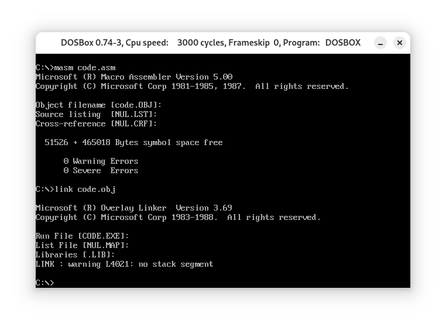
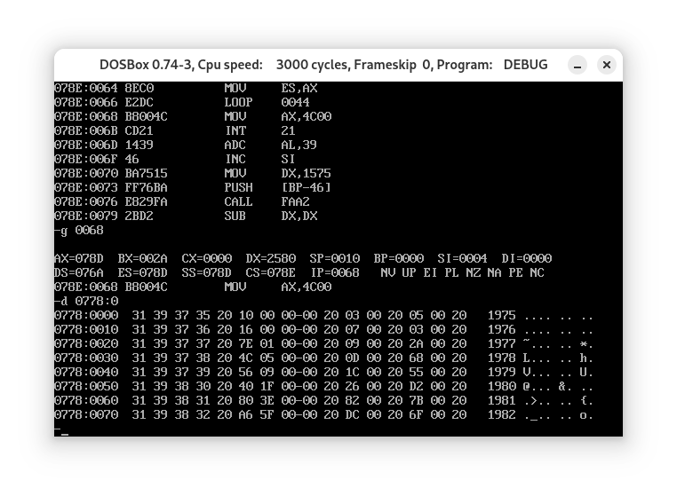

项目情景
Power idea 公司从 1975 年成立一直到 1995 年的基本情况如下。
| 年份 | 收入 | 雇员 | 人均收入 |
|---|---|---|---|
| 1975 | 16 | 3 | ? |
| 1976 | 22 | 7 | ? |
| 1977 | 382 | 9 | ? |
| 1978 | 1356 | 13 | ? |
| 1979 | 2390 | 28 | ? |
| 1980 | 8000 | 38 | ? |
| … | |||
| 1995 | 5,937,000 | 17,800 | ? |
下面的程序中，已经定义好了这些数据:1
2
3
4
5
6
7
8
9
10
11
12
13
14
15
16
17
18
19
20
21; source.asm
assume cs:codesg
data segment
db '1975','1976','1977','1978','1979','1980','1981','1982','1983'
db '1984','1985','1986','1987','1988','1989','1990','1991','1992'
db '1993','1994','1995'
;以上是表示21年的21个字符串
dd 16,22,382,1356,2390,8000,16000,24486,50065,97479,140417,197514
dd 345980,590827,803530,1183000,1843000,2759000,3753000,4649000,5937000
;以上是表示21年公司收入的21个dword型数据
dw 3,7,9,13,28,38,130,220,476,778,1001,1442,2258,2793,4037,5635,8226
dw 11542,14430,15257,17800
;以上是表示21年公司雇员人数的21个word型数据
data ends
table segment
db 21 dup ('year summ ne ?? ')
table ends
编程，将data段中的数据按如下格式写入到table段中，并计算21年中的人均收入(取整)，结果也按照下面的格式保存在table段中。
| 年份 (4B) | 空格（1B） | 收入 (4B) | 空格 (1B) | 雇员数（2B） | 空格 (1B) | 人均收入 (2B) | 空格 (1B) | |||||||||
|---|---|---|---|---|---|---|---|---|---|---|---|---|---|---|---|---|
| table | 0 | 1 | 2 | 3 | 4 | 5 | 6 | 7 | 8 | 9 | A | B | C | D | E | F |
| 0H | 1 | 9 | 7 | 5 | 16 | 3 | ?? | |||||||||
| 10H | 1 | 9 | 7 | 6 | 22 | 7 | ?? | |||||||||
| … | ||||||||||||||||
| 140H | 1 | 9 | 9 | 5 | 5,937,000 | 17,800 | ?? |
提示，可将data段中的数据看成是多个数组，而将table中的数据看成是一个结构型数据的数组，每个结构型数据包含多个数据项。可用bx定位每个结构型数据，用idata定位数据项，用si定位数组项中的每个元素，对于table中的数据的访问可采用[bx].idata和[bx].idata[si]的寻址方式。
分析
源程序source.asm中共定义了codesg(因为个人习惯，下改为code)，data与table段:
code段用于存储汇编指令，对应的段寄存器为cs；data段用于存储输入数据，对应的段寄存器为ds；
1 | data segment |
分为三部分，由data:0H至53H为年份，步长为4字节；由data:54H至A7H为收入，步长为4字节；由data:A8H至段末为雇员人数，步长为2字节；
可以通过bx加上对应的步长实现对对应数据的定位，由于年份与收入两段的步长相等，共用同一个偏移地址，因此对两部分数据的处理可以在同一循环中进行；
table段用于存储输出数据，未指定段寄存器；1
2
3table segment
db 21 dup ('year summ ne ?? ')
table endstable段中每一“行”(10H)year对应的4个字节用于存储年份(字符串)，summ对应的4个字节用于存储收入(dword)，ne对应的2个字节用来存储雇员人数(word)，??对应的两个字节用于存储人均收入(word)；
可以将es指定为table段的段寄存器，通过es+1来实现换“行”；
程序实现
指定各段的段寄存器:1
assume cs:code,ds:data,ss:stack
定义栈段stack，用于暂存cx:1
2
3
4stack segment
dw 8 dup (0)
; 创建栈段暂存cx
stack ends
定义code段和程序起始点start:1
2
3
4
5code segment
start:
......
code ends
end start
初始化各寄存器，使ds指向data，es指向table，ss:sp指向stack栈底:1
2
3
4
5
6
7
8
9mov ax,data
mov ds,ax
mov ax,table
mov es,ax
mov ax,stack
mov ss,ax
mov sp,16
同时处理年份和收入2个长度为4字节的数据:1
2
3
4
5
6
7
8
9
10
11
12
13
14
15
16
17
18
19
20
21
22mov bx,0
mov cx,21
s0:
push cx
mov si,0
mov cx,4
; 4字节，循环4次，每次复制1字节
s1:
; 年份
mov al,ds:[bx+si] ; ds:[bx+si]即data年份部分(0-53H)
mov es:[si],al ; es:[si]即table每行(10H)的"year"位置
; 收入
mov al,ds:[bx+si+54h] ; ds:[bx+si+54h]即data收入部分(54H-A7H)
mov es:[si+5],al ; es:[si+5]即table每行的"summ"位置
inc si
loop s1
add bx,4
pop cx
mov ax,es
inc ax
mov es,ax ; 通过es+1实现换行
loop s0
同时处理雇员人数和人均收入2个长度为2字节的数据:1
2
3
4
5
6
7
8
9
10
11
12
13
14
15
16
17
18
19mov ax,table
mov es,ax
mov bx,0
mov cx,21
s2:
; 雇员人数
mov ax,ds:[bx+0a8h] ; ds:[bx+0a8h]即data雇员部分(0A8H至段末)
mov es:[10],ax ; es:[10]即table每行"ne"位置
; 人均收入
mov ax,es:[5] ; es:[5]即收入低4位
mov dx,es:[7] ; es:[7]即收入高4位
div word ptr es:[10] ; es:[10]即雇员人数
mov es:[13],ax ; es:[13]即table每行"??"位置
add bx,2
mov ax,es
inc ax
mov es,ax
loop s2
最后退出:1
2mov ax,4c00h
int 21h
完整的程序如下:1
2
3
4
5
6
7
8
9
10
11
12
13
14
15
16
17
18
19
20
21
22
23
24
25
26
27
28
29
30
31
32
33
34
35
36
37
38
39
40
41
42
43
44
45
46
47
48
49
50
51
52
53
54
55
56
57
58
59
60
61
62
63
64
65
66
67
68
69
70
71
72
73
74
75
76
77
78
79
80
81
82
83
84
85
86
87
88
89
90; code.asm
assume cs:code,ds:data,ss:stack
data segment
db '1975','1976','1977','1978','1979','1980','1981','1982','1983'
db '1984','1985','1986','1987','1988','1989','1990','1991','1992'
db '1993','1994','1995'
;The above is 21 strings representing 21 years
dd 16,22,382,1356,2390,8000,16000,24486,50065,97479,140417,197514
dd 345980,590827,803530,1183000,1843000,2759000,3753000,4649000,5937000
;The above is 21 dwords representing the incomes of 21 years
dw 3,7,9,13,28,38,130,220,476,778,1001,1442,2258,2793,4037,5635,8226
dw 11542,14430,15257,17800
;The above is 21 words representing the numbers of employees
data ends
table segment
db 21 dup ('year sums em ?? ')
; Create 336 bytes to save the table
table ends
stack segment
dw 8 dup (0)
; Create a stack to temporarily save CX
stack ends
code segment
start:
; Segment Register init
mov ax,data
mov ds,ax
mov ax,table
mov es,ax
mov ax,stack
mov ss,ax
mov sp,16
; Years and Incomes(4B)
mov bx,0
mov cx,21
s0:
push cx
mov si,0
mov cx,4
s1:
; Years
mov al,ds:[bx+si]
mov es:[si],al
; Incomes
mov al,ds:[bx+si+54h]
mov es:[si+5],al
inc si
loop s1
add bx,4
pop cx
mov ax,es
inc ax
mov es,ax
loop s0
; Employees and PCI(2B)
mov ax,table
mov es,ax
mov bx,0
mov cx,21
s2:
; Emplyees
mov ax,ds:[bx+0a8h]
mov es:[10],ax
; PCI
mov ax,es:[5]
mov dx,es:[7]
div word ptr es:[10]
mov es:[13],ax
add bx,2
mov ax,es
inc ax
mov es,ax
loop s2
; Termination
mov ax,4c00h
int 21h
code ends
end start
运行结果
编译、链接，生成code.exe:

运行结果如图所示:
1
0778:0000 31 39 37 35 20 10 00 00-00 20 03 00 20 05 00 20 1975 .... .. ..
可以看到，0H-3H为31 39 37 35即年份1975；第4、9、12、15个字节为20，即空格的ASCII编码；5H-8H为收入10(16)；10H-11H为雇员人数03(3)；13H-14H为人均收入(即收入与雇员人数的商向0舍入的结果)05(5)；
同理，各行数据的输出都是正确的；
项目完成